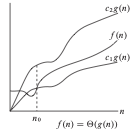
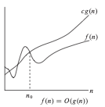
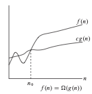

Análisis de Complejidad Temporal#
¿Cuál sería una primera aproximación para medir el desempeño en tiempo de un algoritmo?
Establecer distintos tamaños de entradas y tomar el tiempo que el algoritmo se demora en resolver el problema.
Para obtener una idea del comportamiento temporal del algoritmo, se grafica tamaño de entrada vs tiempo para la solución.
¿Cuál es el objetivo del análisis de algoritmos?
Comparar algoritmos que resuelven un mismo problema.
¿A través de qué se pueden comparar?
Correctitud
Eficiencia
Tiempo
Espacio
Estructuras de datos
El tipo y número de datos con los que se trabaja
¿Por qué es importante?
El análisis de la complejidad temporal es fundamental para:
Comparar diferentes algoritmos que resuelven el mismo problema.
Identificar cuellos de botella y optimizar el rendimiento.
Predecir el comportamiento del algoritmo a medida que aumenta el tamaño de los datos.
¿Cómo compararía el desempeño temporal de dos algoritmos que solucionan el mismo problema?
Graficando tamaño de entradas vs tiempo.
¿Para qué sirve el orden de crecimiento del tiempo de ejecución de un algoritmo?
Caracterización simple de la eficiencia de un algoritmo.
Comparación con el desempeño de algoritmos alternativos para solucionar el problema dado.
Para evitar esfuerzo innecesario.
¿Por qué esfuerzo innecesario?
Las constantes, coeficientes y términos de menor orden de un tiempo de ejecución exacto son dominados por los efectos del tamaño de la entrada cuando este es significativo.
Cuando se estudian entradas de tamaño suficientemente grande para hacer relevante solamente el orden de crecimiento del tiempo de ejecución del algoritmo, estamos trabajando con su eficiencia asintótica.
Ejemplo
Sean tres algoritmos A, B, C tal que:
\(T_A(n) = 100\)
\(T_B(n) = 2n + 10\)
\(T_C(n) = n^2 + 5\)
\(n\) |
\(T_A(n)\) |
\(T_B(n)\) |
\(T_C(n)\) |
|---|---|---|---|
\(1\) |
\(100\) |
\(12\) |
\(6\) |
\(5\) |
\(100\) |
\(20\) |
\(30\) |
\(10\) |
\(100\) |
\(30\) |
\(105\) |
\(100\) |
\(100\) |
\(210\) |
\(10005\) |
Notación Asintótica#
¿Qué es la notación asintótica?
Son aquellas notaciones utilizadas para describir el tiempo de ejecución asintótico de un algoritmo.
Se definen en términos de funciones cuyo dominio es el conjunto de los números naturales.
Se aplica sobre funciones:
Aquellas que caracterizan el tiempo de ejecución de un algoritmo.
Otros aspectos de los algoritmos (espacio).
Funciones que nada tienen que ver con algoritmos.
¿Qué se debe tener en cuenta antes de aplicar la notación asintótica?
El tiempo de ejecución sobre el que se va a trabajar:
Peor caso, mejor caso, para cualquier instancia del problema.
¿Qué notaciones conocemos?
Notación \(\Theta\) .
Notación \(O\) .
Notación \(\Omega\) .
Notación Theta#
¿Qué es la notación \(\Theta\) ?
Representa una función que sirve de cota tanto superior como inferior de otra función cuando el argumento tiende a infinito.
Es una cota ajustada de una función.
Formalmente, para una función \(g(n)\) , se define:
Se dice que \(f(n)\) pertenece a \(\Theta(g(n))\) si existen constantes positivas \(c_1, c_2, n_0\) tal que \(f(n)\) pueda ubicarse entre \(c_1 \cdot g(n)\) y \(c_2 \cdot g(n)\) para un \(n\) suficientemente grande.
Representación gráfica de \(\Theta\)#

¿Qué hace \(\Theta\)?
Acota una función dentro de unos factores constantes para un tamaño de entrada suficientemente grande.
¿Cómo decir que \(g(n)\) es una cota ajustada de \(f(n)\)?
\(f(n) \in \Theta (g(n))\)
\(f(n) = \Theta (g(n))\) (notación informal)
Ejemplo 1
Sea \(T(n) = \frac{1}{2} n^2 - 3n\), queremos probar que:
Solución
Utilizamos la definición de cota ajustada asintótica. Debemos encontrar constantes positivas \(c_1, c_2, n_0\) tal que:
Dividiendo por \(n^2\), llegamos a:
Analizamos las desigualdades:
se mantiene para cualquier \(n \geq 1\) y para \(c_2 \geq \frac{1}{2}\).
se mantiene para \(n \geq 7\) y para \(c_1 \leq \frac{1}{14}\). Finalmente, tenemos:
Por lo tanto, se valida la definición:
¿Qué se puede decir con respecto a cualquier polinomio?
Teorema : Para todo polinomio
donde \(a_i\) son constantes y \(a_d > 0\), entonces:
Notación \(O\)#
¿Qué es la notación \(O\) ?
Representa una función que sirve de cota superior de otra función cuando el argumento tiende a infinito.
Formalmente, se dice que para una función \(g(n)\), se denota a \(O(g(n))\) como el conjunto de funciones tal que:
Se dice que \(f(n)\) pertenece a \(O(g(n))\) si existen constantes positivas \(c\) y \(n_0\) tales que \(f(n)\) pueda ubicarse en o por debajo de \(c \, g(n)\) para un \(n\) suficientemente grande.
**Propiedades de la notación \(O\) **
Representa una función que sirve de cota superior dentro de un factor constante.
Al usar la notación \(O\), se puede describir el tiempo de ejecución de un algoritmo inspeccionando solo su estructura general.
**Representación gráfica de \(O\) **

Ejemplo 2
Sea \(T(n) = 7n^2\) queremos probar que:
Solución
Utilizamos la definición de cota superior asintótica. Debemos encontrar constantes positivas \(c\) y \(n_0\) tal que:
Dividimos por \(n^3\):
Esta desigualdad se cumple para \(n \geq 1\), por lo que tomamos:
Notacion \(\Omega\)#
¿Qué es la notación \(\Omega\)?
Representa una función que sirve de cota inferior de otra función cuando el argumento tiende a infinito.
Formalmente, se dice que para una función \(g(n)\), se denota a \(\Omega(g(n))\) como el conjunto de funciones tal que:
Se dice que \(f(n)\) pertenece a \(\Omega(g(n))\) si existen constantes positivas \(c\) y \(n_0\) tales que \(f(n)\) pueda ubicarse en o por encima de \(c \cdot g(n)\) para un \(n\) suficientemente grande.
Representa una función que sirve de cota inferior dentro de un factor constante.
Representación gráfica de \(\Theta\)

Ejemplo 3
Sea \(T(n) = 8n^3+5n^2+7\) queremos probar que:
Solución
Utilizamos la definición de cota inferior asintótica. Debemos encontrar constantes positivas \(c, n_0\) tal que:
Dividiendo por \(n^3\) obtenemos:
Esta desigualdad se cumple para \(n \geq 1\), por lo que tomamos:
Uso notación asintótica#
¿De qué otras formas se puede utilizar la notación asintótica?
Dentro de fórmulas matemáticas
¿Y qué quiere decir esto?
Que:
donde \(f(n) \in \Theta(n)\). En este caso, \(f(n) = 3n + 1\), que es \(\Theta(n)\).
¿Cuál es la necesidad de incluir una función en notación asintótica dentro de otra?
Se eliminan detalles innecesarios y se depura la ecuación.
Muchos algoritmos consisten en dos o más subprocesos separados.
El número de pasos realizados por un computador para solucionar un problema es la suma del número de pasos realizados por todos sus subprocesos.
¿Cómo se realizaría el análisis de complejidad temporal para este fragmento de código?
Línea |
Código |
Costo |
|---|---|---|
1 |
i = 1 |
c1 |
2 |
while i <= len(mat1): |
c2 |
3 |
—-> j = 1 |
c3 |
4 |
—->while j <= len(mat2): |
c4 |
5 |
———>mat3[i][j] = mat1[i][j] + mat2[i][j] |
c5 |
6 |
———>j = j + 1 |
c6 |
7 |
—->i = i + 1 |
c7 |
¿Qué significa “Costo” en cada línea de código?
El costo de una línea de código se refiere a la cantidad de operaciones que realiza cuando se ejecuta. Puede medirse en términos de complejidad temporal (cuántas veces se ejecuta) o en términos de operaciones básicas realizadas.
c1: La asignación \(i = 1\) es una operación de tiempo constante \(O(1)\).
c2: El while \(i <= len(mat1)\) depende del tamaño de \(mat1\). Se ejecuta \(len(mat1)\) veces.
c3: La asignación \(j = 1\) también es \(O(1)\), pero ocurre cada vez que se repite el while exterior.
c4: El \(while j <= len(mat2)\) se ejecuta \(len(mat2)\) veces por cada iteración del while exterior.
c5: La suma de matrices \(mat3[i][j] = mat1[i][j] + mat2[i][j]\) es \(O(1)\) pero ocurre \(len(mat1) * len(mat2)\) veces.
c6: La operación \(j = j + 1\) es \(O(1)\) pero ocurre \(len(mat2)\) veces por cada \(i\).
c7: La operación \(i = i + 1\) es \(O(1)\) y ocurre \(len(mat1)\) veces.
Complejidad total
La estructura de los bucles anidados nos lleva a una complejidad de \(O(m * n)\), donde \(m = len(mat1)\) y \(n = len(mat2)\), ya que el bucle exterior se ejecuta \(m\) veces y el interior \(n\) veces.
Clasificación de la Complejidad#
Algunas de las complejidades temporales más comunes son:
Tiempo constante, no depende del tamaño de la entrada. $\(O(1)\)$
Crecimiento logarítmico, como en la búsqueda binaria. $\(O(log n)\)$
Tiempo lineal, típico en algoritmos de recorrido. $\(O(n)\)$
Algoritmos eficientes de ordenamiento, como MergeSort y QuickSort. \(O(n log n)\)
Algoritmos cuadráticos, como la ordenación por burbuja. \(O(n^2)\)
Tiempo exponencial, común en soluciones de fuerza bruta. \(O(2^n)\)
Factorial, extremadamente ineficiente para valores grandes. \(O(n!)\)
Complejidad Temporal Sucesión Fibonacci#
¿Cuál es la sucesión de Fibonacci?
Es la sucesión que comienza con los números \(0\) y \(1\), y a partir de estos, cada término es la suma de los dos anteriores.
Los números de esta sucesión se definen mediante la siguiente ecuación de recurrencia:
para \(n \geq 2\). Con valores iniciales:
¿De qué manera podría implementar un algoritmo que calcule el n-ésimo elemento de la sucesión de Fibonacci?
Recursiva
Iterativa
En análisis de algoritmos, la complejidad temporal es una medida del tiempo que tarda un algoritmo en ejecutarse en función del tamaño de la entrada. Nos permite evaluar el rendimiento y la eficiencia de un algoritmo sin depender del hardware o las condiciones específicas de ejecución.
Ejercicio#
Indique cuántas líneas de código se ejecutan en el siguiente algoritmo
Análisis Complejidad Espacial#
¿Para qué se requiere memoria dentro de un algoritmo?
Para guardar:
Instrucciones del programa
Valores constantes
Valores variables
…
¿Cómo se define la complejidad espacial?
La cantidad total de memoria computacional necesaria para completar la ejecución de un algoritmo.
¿Cuáles son las razones por las que un programa utiliza memoria computacional?
Espacio de instrucciones (versión compilada del programa).
Espacio de la pila (información de funciones en ejecución).
Espacio de datos (variables y constantes).
Nota: Al analizar la complejidad espacial, solo se considera el espacio de datos.
¿Qué cantidad de memoria se requiere para guardar distintos tipos de datos?
Tipo de dato |
Tamaño |
|---|---|
Entero ( |
32 bits (4 bytes) |
Punto flotante ( |
32 bits (4 bytes) |
Carácter ( |
16 bits (2 bytes) |
Doble precisión ( |
64 bits (8 bytes) |
… |
… |
¿Cómo se realizaría el análisis de complejidad espacial para este fragmento de código?
int sum(int A[i], int n){
int sum = 0;
for (int i = 0; i < n; i++) {
sum += A[i];
}
return sum
}
Tabla de memoria utilizada:
Tipo |
Variable |
Tamaño de 1 valor atómico |
Cantidad de valores atómicos |
|---|---|---|---|
Entrada |
|
32 bits |
|
|
32 bits |
|
|
Auxiliar |
|
32 bits |
|
Salida |
|
32 bits |
|
Complejidad Espacial Total \(= \text{Entrada} + \text{Auxiliar} + \text{Salida} = n + 3 = \Theta(n)\)
Complejidad Espacial Auxiliar \(= 1 = \Theta(1)\)
Complejidad Espacial Auxiliar + Salida \(= 1 + 1 = \Theta(1)\)